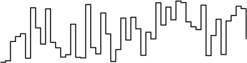

Shor’s algorithm is an algorithm for finding the prime factors of a given integer, discovered by Peter Shor [1]. It is a particularly celebrated quantum algorithm, due largely to the relevance of the integer factorisation problem to our everyday lives - the majority of encryption systems used in finance and electronic communication are reliant on the presumed difficulty of finding the prime factors of some very large integers.
The way in which Shor’s algorithm works is dependent on some non-trivial results from number theory, which we’ll go over first. A full treatment of this is rather involved - see, for example, Appendix 4 of Nielsen and Chuang [2], for the full story. For a more in-depth treatment of the whole thing, then Mermin’s notes are extremely good, as is Shor’s original paper [1] and, of course, Wikipedia.
Essentially, Shor’s algorithm relies on the following fact:
Finding the factors of an integer \(N\) is easy if we can find the period of the modular exponentiation function \(f(x)=a^x \Mod{N}\)
Where by the period we mean the number \(r\) that satisfies \(f(x+r)=f(x)\), where \(a\) is some integer less than \(N\) and where\(\Mod{N}\) indicates that we are working in arithmetic modulo1 1. Modular arithmetic is a form of arithmetic for integers in which the number line wraps back around to 0 upon reaching a certain number. This is familiar from reading an analogue clock! For example, 5 hours after 10:00 is not 15:00, but is 3:00 - where we’ve got 3 from the remainder of 15 divided by 12. The convention is to write this kind of addition as follows: \[10 + 5 \Mod{12} = 3\] Where the number after the \(\textrm{mod}\) is the number at which the number line goes back to 0. \(N\). Let’s consider why knowing the period of \(f\) is useful for the factorisation problem.
Clearly, there exist only \(N\) numbers \(\text{mod}\ N\), so it follows that for some number \(x\) there exists a \(y > x\) such that \(a^y=a^x \Mod{N}\), where \(a\) is defined as before. So:
\[a^x (a^{y-x} - 1) \Mod{N} = 0\]
Now we can write \(r = y - x\) and, furthermore, we impose that \(a\) shares no factors with \(N\). This latter fact clearly means \(a^x\) also shares no factors with \(N\), and hence from the above it is easy to see that:
\[a^r = 1 \Mod{N}\]
It follows from this that our function \(f(x)\) has a period of the smallest value of \(r\) that satisfies the above2 2. \(f(x)\) is quite an unusual function and unlike, say, \(\sin(x)\) or \(\cos(x)\), it’s not possible to tell its period by looking at a small portion of it. It takes shapes like this:  It should be apparent that finding the period of this function is not easy! . But what does this have to do with the factors of \(N\)? Define \(\alpha = a^{r/2} \Mod{N}\), and then write:
\[\begin{align} \alpha^2 & = 1 \Mod{N} \\ \alpha^2 - 1 = (\alpha & + 1)(\alpha - 1) = 0 \Mod{N} \end{align}\]
So, one of \((\alpha \pm 1)\) divides \(N\). It can be shown that we can write the greatest common divider of 2 integers \(a\) and \(b\), denoted \(\gcd(a,b)\), as \(ax + by\) where \(x,y\) are integers. Hence, if \(c\) divides both \(a\) and \(b\), it also divides \(ax + by = \gcd(a,b)\). Factors of \(N\) obviously will also divide whichever of \((\alpha \pm 1)\) divides \(N\), and so calculating33. A very beautiful and efficient way to find the greatest common divisor of 2 integers is Euclid’s algorithm. This can be elegantly written as a recursion: \[\gcd(a,b) = \begin{cases} a & b = 0 \\ \gcd(b, a \Mod{b}) & b > 0 \end{cases}\] Which requires a number of operations scaling quadratically in the number of digits in \(a\) and \(b\). \(\gcd(\alpha \pm 1, N)\) gives us a non-trivial factor of \(N\).
Recalling that \(\alpha = a^{r/2} \Mod{N}\), then having found \(r\) (by yet unspecified means) we require 2 pieces of good luck in order to use the above to find the factors of \(N\):
Provided our luck holds (and if it doesn’t, we have to start again), this means that we can factor \(N\) with repeated application of the following algorithm [2]:
It’s interesting to see how often our luck holds - if it’s less than 50% of the time then the algorithm isn’t very good. It can be shown, with some work, that:
\[\Pr\left(r \text{ is even and } x^{r/2} \neq \pm 1 \Mod{N} \right) = 1 - \frac{1}{2^m}\]
Where \(m\) is the number of prime factors of \(N\). This means that we succeed at least half of the time!
This rather unexpected method for factorisation is all very well, but we’ve glossed over perhaps the most elusive step - finding the value of \(r\). Whilst quantum mechanics doesn’t seem to have very much in common with number theory, it certainly involves a lot of waves, and waves certainly involve a lot of periodicity: we will show that \(r\) can be found efficiently by quantum computational methods.
A very familiar operation for physicists is the Fourier transform, defined (up to normalisation conventions55. It’s worth noting here that, for whatever reason, quantum information theorists usually use a positive sign in the exponent for the Fourier transform and a negative for the inverse transform. This is opposite to what we usually come across in the rest of physics/maths.) as:
\[\hat{f}(\omega) = \int_{-\infty}^{\infty} f(x) \, e^{i \omega x} \ \text{d} x\]
For discrete \(x\) - that is to say, for vectors of length \(Q\) with values \(x_i\) - we can define the related Discrete Fourier Transform (DFT):
\[y_k = \frac{1}{\sqrt{Q}} \sum_{j = 0}^{Q - 1} x_j \, e^{2 \pi i j k / Q}\]
And a very similar Quantum Fourier Transform (QFT):
\[\ket{j} \xrightarrow{QFT} \frac{1}{\sqrt{Q}} \sum_{k = 0}^{Q - 1} e^{2 \pi i j k / Q} \ket{k}\]
Where \(\ket{j}\) and \(\ket{k}\) are \(n\)-qubit states expressed in binary notation66. We can write \(n\)-qubit states using only one number: \[\ket{x} \equiv \ket{x_1 x_2 \cdots x_n}\] where \[x = x_1 2^{n-1} + x_2 2^{n-2} + \cdots + x_n 2^0\] For example, \(\ket{5} \equiv \ket{0101}\). The important thing here is to remember that some state \(\ket{x}\) is not a state of a single qubit; it is a state of \(n\) qubits. and \(Q = 2^n\). As we know that complex numbers of the form \(e^{i \theta}\) lie on the unit circle in the complex plane, we can see that the QFT takes some state \(\ket{j}\) to a uniform superposition of states running from \(\ket{0}\) to \(\ket{Q-1}\), but where these states have different phase factors, uniformly distributed with an angular distance between them of \(j/Q\). Bearing this in mind, the action of the QFT is illustrated below.
The utility of the QFT is in the fact that its result has peaks at positions related to the period of the original coefficients. This is quite well-known (consider the Fourier transform’s ubiquity in spectral analysis) but is also easy to see. If we start out with:
\[\begin{align} \sum_x A(x) \ket{x} & \xrightarrow{QFT} \sum_x B(x) \ket{x} \\ B(x) = \frac{1}{\sqrt{Q}} & \sum_{j = 0}^{Q - 1} e^{2 \pi i j x / Q} A(j) \\ \end{align}\]
Then if \(A(x)\) is periodic with period \(r\) and we define \(R\) as the nearest integer to \(Q / r\), we see that:
\[\begin{align} B(x) & = \frac{1}{\sqrt{Q}} \sum_{m = 0}^{R - 1} \sum_{j = 0}^{Q - 1} e^{2 \pi i (j + m r) x / Q} A(j + m r) \\ & = \frac{1}{\sqrt{R}} \frac{1}{\sqrt{Q}} \sum_{m = 0}^{R - 1} e^{2 \pi i m x / R} \sum_{j = 0}^{Q - 1} e^{2 \pi i j x / Q} A(j) \\ & = \frac{\sqrt{r}}{Q} \left( \frac{1 - e^{2 \pi i x}}{1 - e^{2 \pi i x / R}} \right) \sum_{j = 0}^{Q - 1} e^{2 \pi i j x / Q} A(j) \end{align}\]
In this last term, notice that as as \(x\) approaches integer multiples of \(R\), the denominator in the brackets tends to 0 and hence \(B(x)\) blows up: as we claimed, the QFT has peaks related to the period of the original coefficients, specifically at integer multiples of \(Q / r\).
It’s worth explicitly pointing out that this isn’t by itself very useful to us as we don’t actually know all the values of \(B(x)\); we just have a superposition of them so any measurement will give us \(B(x)\) only for some specific value of \(x\). However, this is not an insurmountable obstacle, as we’ll see in the next section.
Through a bit of hand-waving, we suggested above that it will be possible for us to know something close to the value of an integer multiple of \(Q / r\). But how can we find \(r\) from this?
It turns out (again, refer to [2]) that given a real and rational number \(x\), then if \[ \left| x - \frac{j}{r} \right| \leq \frac{1}{2 r^2} \] then if we express \(x\) as a continued fraction77. Continued fractions are a way of representing real numbers with only integers, in forms that look like: \[ x = a_0 + \frac{1}{a_1 + \frac{1}{a_2 + \frac{1}{\ldots + \frac{1}{a_M}}}} \] where the \(a_m\) are integers. We can obtain them from, say, a usual fractional representation by an iterative process: we first take \(a_0 = \lfloor x \rfloor\) as the integer part of \(x\), then find the reciprocal of the fractional part, then find the integer part of the fractional part and identify this as \(a_1\), and then repeat this procedure iteratively until the fractional part is 0. An example makes this clear: let \(x = 2.35 = 2 \frac{7}{20} \). Now \[\begin{align} x & = 2 + \frac{7}{20} = 2 + \frac{1}{20/7} \\ & = 2 + \frac{1}{2 + \frac{6}{7}} = 2 + \frac{1}{2 + \frac{1}{7/6}} \\ & = 2 + \frac{1}{2 + \frac{1}{1 + \frac{1}{6}}} \end{align}\] , \(j/r\) is a convergent of it - that is to say, a number obtained by taking the first \(n\) terms of the fraction. Let’s say \(x\) is an approximation to \(j/r\) and that we know it to a precision of \(b\) bits. Then simple arithmetic tells us that \[ \left| x - \frac{j}{r} \right| \leq \frac{1}{2^{b}} \] so in order to exploit the continued fraction property we must have \(2^b \geq 2r^2\).
This is, for now, enough knowledge for us to define the period-finding algorithm for the modular exponentiation function and to look at its behaviour and its subtleties.
We start off with some composite number \(N\), and allow ourselves access to 2 “registers” of \(n\) qubits, choosing \(n\) to satisfy \(N^2 \leq Q \leq 2 N^2\) where \(Q = 2^n\) as before. Define a unitary operator for calculating88. The modular exponentiation function is not actually very easy to calculate. \(a^j\) is potentially a very large number (requiring a lot of memory to be stored in a computer) and a naive calculation of the function requires a number of operations that scales linearly with the exponent \(j\). It turns out we can calculate the function in a way that uses less memory and scales with \(\log j\). We first write \(j\) as a sum of powers of 2: \[ j = \sum_i c_i 2^i \] And so we can write \(a^j\) as: \[ a^j = a^{\sum_i c_i 2^i} = \prod_i \left( a^{2^i} \right)^{c_i} \] Recalling that \[ [x \Mod{N}] \cdot [y \Mod{N}] = x \cdot y \Mod{N} \] We can then write: \[ a^j \Mod{N} = \prod_i \left[ \left( a^{2^i} \right)^{c_i} \Mod{N} \right] \] Which contains comparatively small numbers at each multiplication, thus saving memory. the modular exponentiation function:
\[ U_{ME} ( \ket{j} \ket{k} ) \rightarrow \ket{j} \ket{a^j \Mod{N}} \]
Where \(a\) is an integer that satisfies the previously discussed requirement of sharing no factors with \(N\). Now we can define the period-finding algorithm:
And so, using the properties of the QFT, we have found the period of the modular exponentiation function. Given the number-theoretic results of the first section, this means we can find the factors of \(N\).
[1] P. Shor, “Polynomial-Time Algorithms for Prime Factorization and Discrete Logarithms on a Quantum Computer” SIAM Rev., vol. 41, no. 2, pp. 303–332, Jan. 1999.
[2] M. A. Nielsen and I. L. Chuang, Quantum Computation and Quantum Information, 10th Anniversary Edition. Cambridge ; New York: Cambridge University Press, 2010.